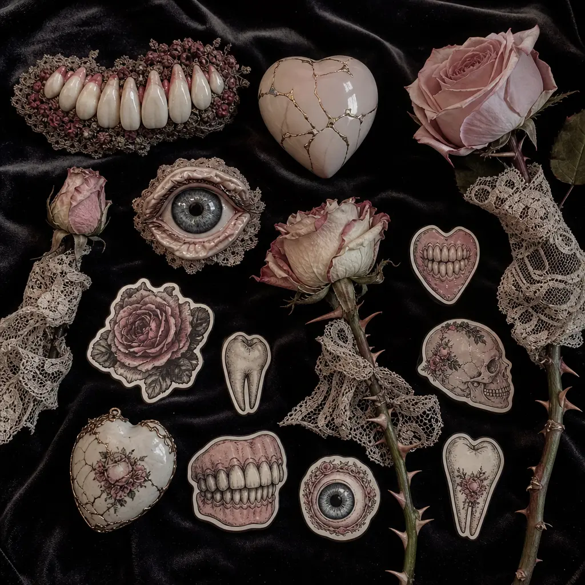
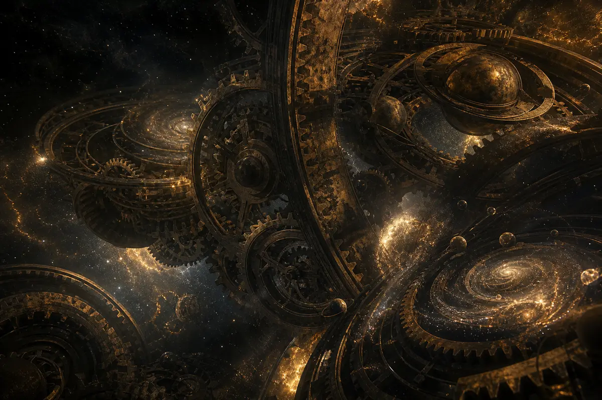
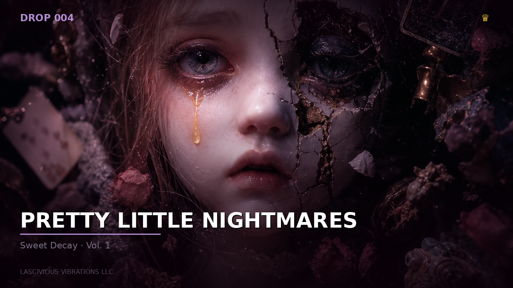
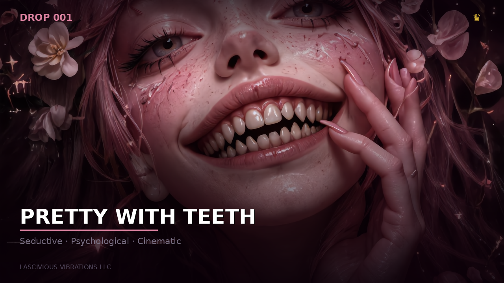
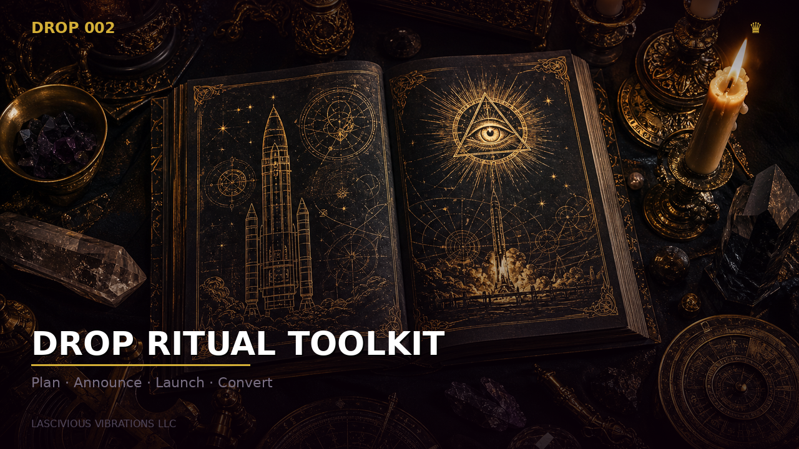
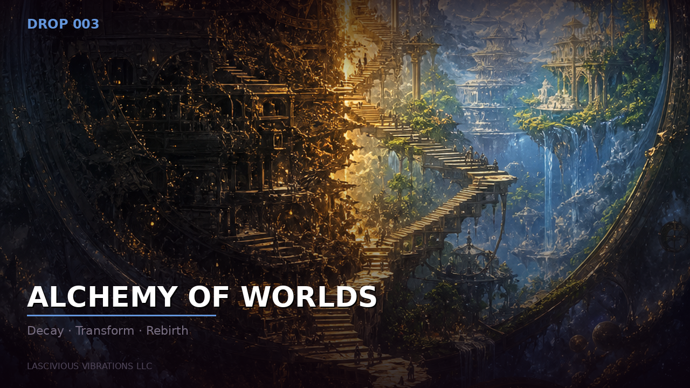

Transmission 001
The Signal vs. The Noise
In an age of constant information, true insight is often drowned out. How to find your signal and amplify it.
Lascivious Vibrations LLC
⬥ S W E E T D E C A Y ⬥
Four worlds. Four frequencies. Each one darker than the last.
 W O R L D I
W O R L D I
Beautiful danger. Invasive smiles. The glamour that bites.
ENTER → W O R L D I I
W O R L D I I
The instruments of creation. Templates of dark ceremony.
ENTER → W O R L D I I I
W O R L D I I I
Where reality collapses. Impossible architecture. Cosmic dread.
ENTER → W O R L D I V
W O R L D I V
Corrupted innocence. Dreamcore contamination. Sweet decay.
ENTER →PNG Pack Collection
Beautiful danger. Emotionally invasive smiles. Seductive psychological horror. The glamour that draws you in — and the teeth that keep you.
The PNG pack that proves beauty is a weapon. Every element designed to seduce — then unsettle.
The first smile is always the most dangerous. It's the one you trust.

Cute is the bait. The hook is somewhere behind the eyes.
A six-stage descent from innocence to fracture. Watch the smile evolve. Watch it break.
The smile that passes. The one you wouldn't question — until you remember it later.
The moment comfort curdles. The smile stays. Your instinct says leave.
The glamour drops. The real architecture revealed. Beautiful. Predatory. Honest.
When the shadow doesn't match the face. When the reflection shows something else entirely.
Porcelain fissures. The mask failing. The beauty splitting at the seams.
What remains when the performance ends. The residue. The memory that won't wash off.
The building blocks of nightmare glamour. Isolated. Transparent. Ready to haunt any composition.
Porcelain expressions. Cracked smiles. The uncanny valley rendered in high definition.
The architecture of predation. Perfect rows that shouldn't exist. The smile's hidden infrastructure.
Windows to something else entirely. Dilated. Reflective. Watching you from every angle.
Marks of power. Emblems of the Sweet Decay universe. Each one a key to deeper creation.

The tools of nightmare glamour. Every element placed with predatory precision.
The stages where nightmares perform. Rich textures. Haunted surfaces. Every backdrop tells a story of decay.
Crushed velvet bleeding into shadow. The luxury of rot. Surfaces that remember being beautiful.
The fracture lines of perfection. White turning grey. Smooth surfaces splitting to reveal depth.
Delicate patterns cast in darkness. The interplay of light and absence. Feminine horror rendered in thread and void.

Smile like you mean it. Smile until they forget to look away.
The complete PNG pack. All four sections. Every element. Every background.
The instruments of dark creation. Templates forged in macabre elegance. Every tool carries the weight of tragic devotion and operatic sorrow.
The ritual begins with the right instruments. These were forged in velvet darkness.

Templates woven from moonlit sorrow. Every design carries an echo of the ceremony.

The cult edition. For those who don't just create — they conduct the ritual.
This world is being prepared for your descent.
Where reality itself collapses. Impossible architecture. Cosmic consciousness. Existential dread wrapped in dimensional beauty.
The first world to fall is always the one you thought was real.

Decay is not destruction. It is the universe remembering what it was before you named it.

Transformation happens in the space between what was and what should never have been.

Rebirth is not gentle. It is the architecture of impossible worlds forcing themselves into existence.

Behind every collapsing dimension is an engine. You were never meant to see it running.
This world is being prepared for your descent.
Vol. 1 — Sweet Decay Collection
Corrupted innocence. Dreamcore contamination. The emotional core of the entire universe. Four sections. Four frequencies of haunted beauty.
The innocence that hides a bite. The sweetness that stains. The aesthetic of corrupted charm — where adorable meets unsettling.

Unsettling sweetness. Porcelain dolls and rotting candy. The question you can't stop asking: why is this adorable thing making me uncomfortable?
The sugar coating cracks. What's underneath was never meant for daylight.
Love that outlasts flesh. Devotion that outlasts death. Eternal mourning wrapped in black velvet and crimson lace.

Velvet shadows and whispered promises. The tragic beauty of eternal longing. Love that bleeds into every frame.
Impossible architecture and shifting realities. The landscapes of the subconscious. Where dreams become traps and geography becomes memory.

Reality collapses. Memory becomes geography. Dreams become infrastructure. You know this place… but you should not.
The emotional core. Corrupted innocence at its purest. The horror that comes from memory, nostalgia, and the realization that you remember being afraid as a child.

The toys remember. The wallpaper remembers. The closet door was never fully closed. Some things from childhood followed you here.

The full descent. Every section. Every frequency. The entire nightmare, complete.
The full Sweet Decay Collection. All four sections. Every frequency. The entire nightmare.
Each sigil is a key. A unique mark of power, unlocking new realms of creation.

FEATUREDThe flagship collection. Corrupted innocence, dreamcore contamination, and the emotional core of the entire universe. Four sections, each a frequency of haunted beauty.

Beautiful danger. Invasive smiles. The glamour that bites. Seductive psychological horror.

The instruments of dark creation. Templates forged in macabre elegance. Every tool carries the weight of tragic devotion.

Where reality itself collapses. Impossible architecture. Cosmic consciousness. Existential dread wrapped in dimensional beauty.
A voice without action is only noise.
"Be The Change You Want To See In The World" is not a slogan. It's the operating principle. Every drop carries a message. Every message carries intent.
This is a movement built on accountability. The world we live in is a reflection of collective behavior. If you want a kinder world, be kinder. If you want honesty, be honest. If you want unity, stop feeding division.
Because a voice without action is just noise.
CREATE INTENTIONALLY: Nothing here is filler. Every prompt, every image, every word was placed with purpose.
BUILD FREELY: These tools exist so creators can build without limits. No gatekeeping. No artificial scarcity of knowledge.
INSPIRE ALWAYS: If the work doesn't move someone, it hasn't done its job.
BE THE SIGNAL: Cut through the noise. Offer clarity, not confusion. Solutions, not just complaints.
PRACTICE ACCOUNTABILITY: Own your part in the collective. Your actions matter more than your words.
EMBRACE THE UNCOMFORTABLE: Growth happens outside comfort zones. Challenge your own biases.
Insights, interviews, and visual explorations of the Sweet Decay Universe and the Be The Change movement.
An introduction to the core concepts behind Lascivious Vibrations and the Sweet Decay Universe.
Exploring the role of artificial intelligence as a creative tool for artists and world-builders.
A behind-the-scenes look at the creation of the Pretty Little Nightmares universe.
How intentionality shapes the impact and resonance of creative work.
Essays and insights on consciousness, creativity, and the human condition.
In an age of constant information, true insight is often drowned out. How to find your signal and amplify it.

Our reality is built on the stories we tell ourselves. Deconstructing and rebuilding your personal narrative.

Every action carries a frequency. The power of conscious intent in creation and daily life.

Why your behavior speaks louder than your words, and how to align them for true impact.
Deep dives into the philosophy, psychology, and craft behind cinematic horror art.

Every horror image tells a story the viewer already knows but refuses to remember. The best cinematic horror doesn't show you something new — it reminds you of something you buried.

The difference between AI art and AI-directed cinema is the same as the difference between noise and a symphony. One happens accidentally. The other is authored with emotional intelligence.

Why does decaying beauty fascinate us? Because it mirrors the human condition. We are all slowly becoming something we weren't. The only question is whether that transformation is conscious or accidental.

The goal is never "generate horror images." The goal is "direct emotionally invasive cinematic worlds." Every texture, every shadow, every uncomfortable smile is a design decision, not an accident.
When gravity fails and staircases lead nowhere, the viewer stops looking at the image and starts feeling it. That's the shift from art to experience. That's alchemy.
This is not a comment section. This is not a place for noise, banter, slander, vulgarity, or hostility.
This is a space for people who understand that being the change requires participation — not performance.
Share your work. Share your perspective. Share how you are being the change in your world. Upload your videos, your art, your stories — but understand: this space has standards.
✦ Controversy is welcome. Slander is not.
✦ Disagreement is healthy. Personal attacks are expelled.
✦ Profanity weakens your argument. Lead with intelligence.
✦ Negativity for the sake of negativity is noise. Be the signal.
✦ This is "Be The Change" — not "Be The Noise."
✦ If your contribution doesn't build, enlighten, or inspire — it doesn't belong here.
Your voice matters here. Submit your art, your videos, your written transmissions — anything that embodies the "Be The Change" philosophy. Every submission is reviewed before it enters the signal.
"This space was built because the world needs more signal and less noise. Every person who shows up here with intention is proof that change is not only possible — it's already happening."
Connect with us beyond the veil:
For those who choose to remain part of the problem. We answer not with argument — but with clarity.
Every movement meets resistance. Every signal encounters interference. The noise is inevitable — people who mock what they don't understand, attack what threatens their comfort, or dismiss what requires them to change.
We do not argue. We do not engage in hostility. We answer with the discipline of those who came before us — Marcus Aurelius, Seneca, Epictetus — who understood that the obstacle is the way and that anger is the sign of weakness, not strength.
Marcus Aurelius wrote: "The impediment to action advances action. What stands in the way becomes the way."
The belief that nothing can change is itself the disease. Every structure humans built — from civilizations to constitutions — began as something one person believed was possible while others called it pointless. Your cynicism is not wisdom. It is surrender dressed as intelligence.
We are not trying to change the entire world overnight. We are changing behavior. One person at a time. Behavior creates culture. Culture creates society. That is not ideology — it is observation.
Seneca wrote: "It is not that we have a short time to live, but that we waste a great deal of it."
Products fund movements. Movements require infrastructure. Infrastructure costs money. The question isn't whether someone profits — it's whether the profit serves a purpose beyond itself. Every dollar here funds art, community, and a message that asks humans to be better. What does your cynicism fund?
Epictetus taught: "It's not what happens to you, but how you react to it that matters."
If the world is too far gone, then you have nothing to lose by trying. And if it isn't — then every act of kindness, every refusal to participate in cruelty, every moment of genuine human connection is a brick in a different foundation. The people who say "it's too late" are the same people who never started. Don't confuse their exhaustion with yours.
Marcus Aurelius wrote: "Waste no more time arguing about what a good man should be. Be one."
You are correct that most people resist change. That is not a reason to stop — it is the reason the work matters. If change were easy, it wouldn't need advocates. If kindness were the default, it wouldn't need to be practiced. We are not waiting for permission from the majority. We are demonstrating what's possible for the ones who are ready.
Seneca wrote: "A sword never kills anybody; it is a tool in the killer's hand."
Words are tools. In the hands of the careless, they are noise. In the hands of the intentional, they are architecture. The difference is whether action follows. We build. We create. We show up. If that looks like noise to you, it may be because you have been surrounded by it so long you've forgotten what signal sounds like.
We do not argue with the static. We outlast it.
Lascivious Vibrations is a digital creative ecosystem built at the intersection of art, technology, and human consciousness.
It is three things simultaneously:
1. A product system. Cinematic AI art collections, prompt engineering packs, and creator toolkits — designed for people who understand that AI is a creative instrument, not a replacement for vision.
2. A movement. "Be The Change You Want To See In The World" is not a slogan. It's the operating principle. Every drop carries a message. Every message carries intent.
3. A signal. The transmissions are a voice. Not a content machine. A real perspective on humanity, creativity, the future, and the work behind the art.
Create Intentionally. Nothing here is filler. Every prompt, every image, every word was placed with purpose.
Build Freely. These tools exist so creators can build without limits. No gatekeeping. No artificial scarcity of knowledge.
Inspire Always. If the work doesn't move someone, it hasn't done its job.
I built this because the world has enough noise and not enough signal.
I believe AI art can be intentional, emotional, and meaningful. I believe products can fund movements. I believe movements can change behavior. I believe behavior changes everything.
This is not a brand. This is a system. Welcome to it.
— Lascivious Vibrations LLC
A lot of people treat it like a quote. Like something you hang on a wall to sound deep.
For me… it's not that.
It's accountability. It's understanding that the world we live in didn't just magically become this way. We built it. Through our actions, our silence, our greed, our avoidance, our lack of empathy, our refusal to work together.
People keep asking why the world is so cold while contributing to the coldness every single day without even realizing it.
So when I say "be the change"… I mean if you want a kinder world, then be kinder. If you want honesty, be honest. If you want unity, stop feeding division.
Because a voice without action is just noise.
And the truth is… society is a reflection of collective behavior. That reflection starts with us.
I don't think being the change means being perfect.
People hear things like this and immediately think somebody's trying to tell them how to live or act morally superior. That's not what this is.
Being the change is about alignment. It's about your actions matching the things you claim to believe in.
If you believe in kindness… practice it when it's inconvenient. If you believe in honesty… be honest when lying would benefit you. If you believe people deserve compassion… stop picking and choosing who deserves humanity.
That's the problem now. Everybody wants the reward of a better world without contributing to building one.
People think change comes from governments, celebrities, money, status… and honestly most real change starts in ordinary moments nobody sees.
The way you treat people when there's nothing to gain from it says more about you than anything else ever will.
I mean exactly what it sounds like.
People talk constantly. Everybody has opinions. Everybody has outrage. Everybody posts quotes and hashtags and speeches and performances.
But then you look at how they actually move through the world… and none of it matches.
You can say you care about people all day long, but if you walk past suffering every chance you get… what are your words actually worth?
At some point words stop meaning anything if behavior never follows them.
That's why I say a voice without action is only noise. Because sound is easy. Action costs something.
The logic is actually really simple.
Human behavior creates culture. Repeated behavior creates society. That means every small action people normalize becomes part of the structure we all live inside of.
If selfishness becomes normal… society reflects selfishness. If cruelty becomes entertainment… society becomes hostile. If empathy becomes weakness… people stop helping each other.
So if enough people begin shifting behavior… the environment shifts too.
That's the logic. Not fantasy. Not ideology. Just cause and effect.
By understanding that change is usually uncomfortable at first.
Most people are followers by conditioning. They wait to see what everybody else is doing before they move.
Being the change means sometimes being the first person to: help, speak honestly, break hostility, show compassion, stop feeding division, stop treating people like enemies.
And honestly… it starts way smaller than people think.
Make eye contact. Listen when somebody speaks. Help people when there's nothing in it for you. Stop living for validation and social approval all the time.
A healthier civilization starts with healthier human behavior. Not perfection. Just awareness and intention.